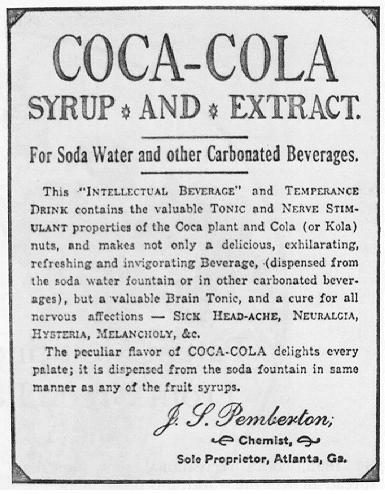

The exact formula of Coca-Cola's natural flavorings (but not its other ingredients, which are listed on the side of the bottle or can) is a trade secret. The original copy of the formula was held in Truist Financial's main vault in Atlanta for 86 years. Its predecessor, the Trust Company, was the underwriter for the Coca-Cola Company's initial public offering in 1919. On December 8, 2011, the original secret formula was moved from the vault at SunTrust Banks to a new vault containing the formula which will be on display for visitors to its World of Coca-Cola museum in downtown Atlanta.
According to Snopes, a popular myth states that only two executives have access to the formula, with each executive having only half the formula. However, several sources state that while Coca-Cola does have a rule restricting access to only two executives, each knows the entire formula and others, in addition to the prescribed duo, have known the formulation process.
BACK TO THE TOP